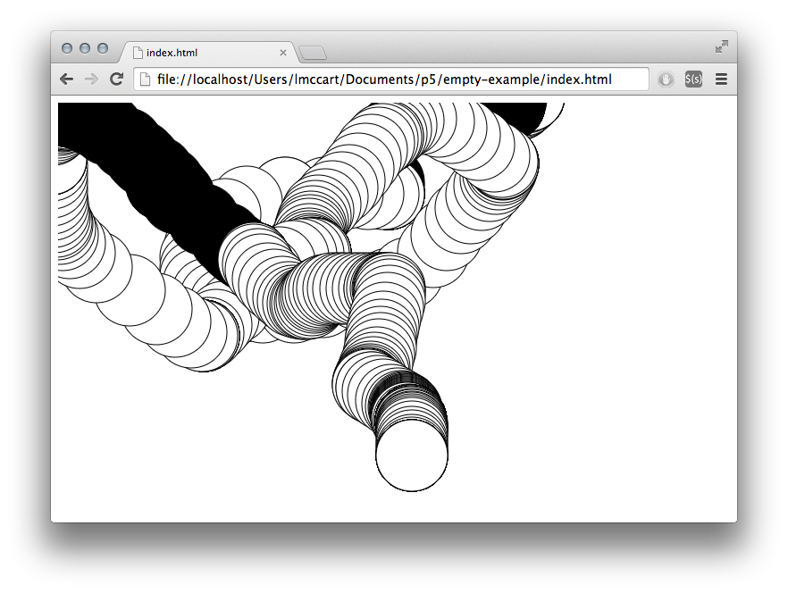

Get Started
This page walks you through setting up a p5.js project and making your first sketch. If you are using the p5 editor, you can skip to the Your First Sketch section. Processing users may want to check out the Processing transition tutorial.
Download and File Setup
The easiest way to start is by using the empty example that comes with the p5.js complete download.
If you look in index.html, you’ll notice that it links to the file p5.js. If you would like to use the minified version (compressed for faster page loading), change the link to p5.min.js.
<script src="../p5.min.js"></script>Alternatively, you can link to a p5.js file hosted online. All versions of p5.js are stored in a CDN (“Content Delivery Network”). You can see a history of these versions here: p5.js CDN. In this case you can change the link to:
<script src="//cdnjs.cloudflare.com/ajax/libs/p5.js/0.0.0/p5.js"></script>Where “0.0.0” gets replaced by the version you’d like to use (the highest one is usually best).
Environment
You can use the code editor of your choice. Instructions for getting set up with Sublime Text 2 are included below. (An official p5 editor is in development, you can test out the alpha version here.)
Open Sublime. Go to the File menu and choose Open... and choose the folder that your html and js files are located in. On the left sidebar, you should now see the folder name at the top, with a list of the files contained in the folder directly below.
Click on your sketch.js file and it will open on the right where you can edit it.

Open a web browser. Type:
localhost/path/to/your/index.html
in the address bar to view your sketch.
Your First Sketch
In your editor, type the following:
function setup() {
}
function draw() {
ellipse(50, 50, 80, 80);
}This line of code means “draw an ellipse, with the center 50 pixels over from the left and 50 pixels down from the top, with a width and height of 80 pixels.”
Refresh your page view in your browser, if you’ve typed everything correctly, you’ll see this appear in the display window:

If you didn’t type it correctly, you might not see anything. If this happens, make sure that you’ve copied the example code exactly: the numbers should be contained within parentheses and have commas between each of them, and the line should end with a semicolon.
One of the most difficult things about getting started with programming is that you have to be very specific about the syntax. The browser isn’t always smart enough to know what you mean, and can be quite fussy about the placement of punctuation. You’ll get used to it with a little practice. Depending on the browser you are using, you can also see errors by looking at the JavaScript “console”. In chrome, for example, this is under View > Developer > JavaScript Console.
Next, we’ll skip ahead to a sketch that’s a little more exciting. Delete the text from the last example, and try this:
function setup() {
createCanvas(640, 480);
}
function draw() {
if (mouseIsPressed) {
fill(0);
} else {
fill(255);
}
ellipse(mouseX, mouseY, 80, 80);
}This program creates a window that is 640 pixels wide and 480 pixels high, and then starts drawing white circles at the position of the mouse. When a mouse button is pressed, the circle color changes to black. We’ll explain more about the elements of this program in detail later. For now, run the code, move the mouse, and click to experience it.
What Next?
- Read the Processing transition tutorial to learn how to convert from Processing to p5.js, and the main differences between them.
- View the reference for full documentation.
- Check out the learn page for tutorials and examples.
Parts of this tutorial were adapted from the book, Getting Started with Processing, by Casey Reas and Ben Fry, O’Reilly / Make 2010. Copyright © 2010 Casey Reas and Ben Fry. All rights reserved.